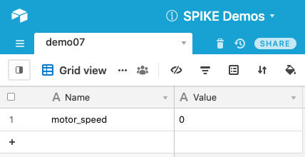
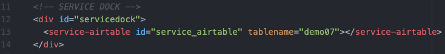
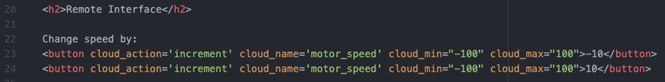
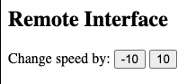
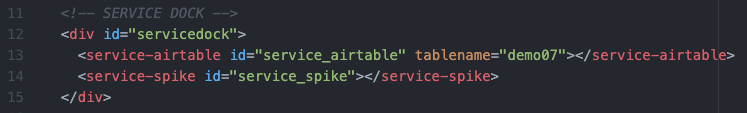
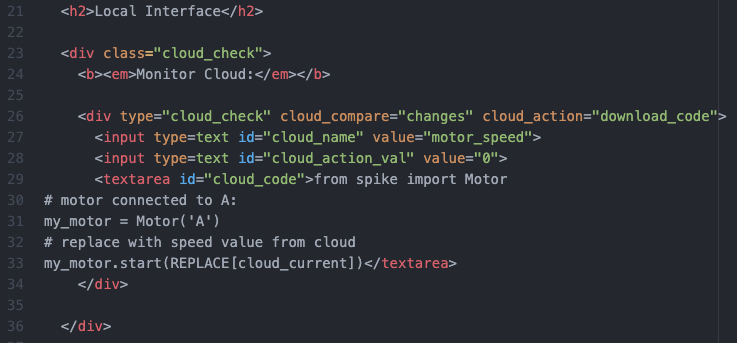
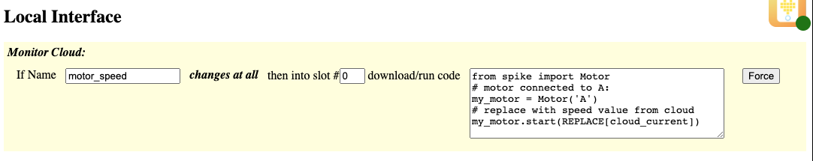

This demo shows how to use a button to increment a numerical value in the database.
Be sure to view the overall Documentation for configuring the cloud storage (API key, Base ID, etc) and for more information on how the entire system works.
The "Name" column has an entry "motor_speed" that will hold the updated values from the Increment Button. The "Value" will be a number used to control the motor.

Service Dock
The remote page has the Airtable Service Dock element. Make sure to update the tablename attribute to match your table name.
Remote Interface
The two buttons have cloud_action of "increment". Whatever value (displayed on the button) is used (here: -10 and 10) will be used to increment the value stored in the cloud (so "decrement by 10" and "increment by 10" respectively).
The buttons also have a "cloud_min" and "cloud_max" value associated with them. This keeps the value in the cloud from going out of range (here -100 and 100, because these are motor speed values).
This is how the two increment buttons will look on the Remote Page:

Service Dock
The local page has both the Airtable Service Dock element (make sure to update the tablename attribute to match your table name). There is also a single SPIKE Prime Service Dock element.
Local Interface
The local interface is set up to monitor the "motor_speed" value. If it changes at all, the new code is downloaded into Slot #0 and run. Note that the value of "REPLACE[cloud_current]" is updated to be the motor_speed value stored in the cloud.
This is how the element will look on the Local Page:
